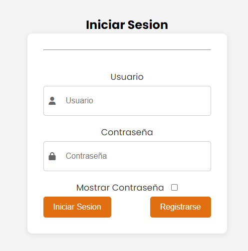

Esta guía te explicará cómo utilizar la página web Mamá Coco en su máximo esplendor.
La página web Mamá Coco busca facilitar la decisión sobre qué cocinar hoy y cómo hacer la receta elegida, con un paso a paso detallado para cada platillo.
Aquí encontrarás cuatro opciones. Al hacer clic en cada una, realizarán diferentes acciones:
Inicio: Te llevará al inicio de la página.
Recetas: Al hacer clic, accederás a una sección donde podrás elegir entre diferentes recetas.
Iniciar Sesión: Te permitirá iniciar sesión y tener tu propio usuario. Si no tienes una cuenta, podrás registrarte al hacer clic en el botón de registrar.
Manual de Usuario: Te llevará a este manual de usuario que explica todos los detalles de esta página web.
En esta sección verás recetas al azar según la hora del día. Al seleccionar una receta, serás llevado a los detalles de la misma.
Cada receta incluye una lista de ingredientes y un paso a paso detallado. Asegúrate de seguir las instrucciones para obtener los mejores resultados. Si alguna receta tiene un video, no dudes en verlo para obtener una guía visual.
Aquí hay algunos consejos para mejorar tus habilidades culinarias:
Consulta estas preguntas frecuentes para resolver cualquier duda que tengas: